Code
ovb_df <- readr::read_csv(
paste0(
here::here("research-guides/variable-selection/"),
"assets/data/ovb_data.csv"
),
show_col_types = FALSE
)This guide introduces a principled approach to covariate selection in regression models, with a focus on causal interpretation. We emphasize that the question “What is the association of X with Y, holding Z constant?” is only meaningful once the target estimand is clearly defined (total effect, direct effect, or purely predictive association). Using the language of causal diagrams, we distinguish key variable types, including confounders, mediators, colliders, instruments, and precision variables. We explain how including or excluding each can reduce bias, create bias, or affect efficiency. Directed acyclic graphs (DAGs) are presented as a heuristic tool to encode subject-matter knowledge, identify appropriate adjustment sets via the back-door criterion, and avoid common errors such as garbage-can regression, p-value-driven variable selection, and adjustment for post-exposure variables or colliders. We also discuss practical issues such as positivity, sample size versus model complexity, and time-varying confounding where standard regression may fail. Finally, we outline data-driven model selection tools (F-tests, AIC, BIC, adjusted R², and cross-validation) and show how they can be combined with theory-driven covariate selection to balance goodness-of-fit against overfitting. The goal is to help applied researchers build regression models that are both scientifically credible and robust to overfitting.
covariate selection, confounding, causal inference, directed acyclic graphs, regression modeling, overfitting, model selection, AIC, BIC, cross-validation
In regression we often ask: “What is the association of X with Y, holding Z constant?” But what should we hold constant?
Every covariate decision is a trade-off along three axes: bias (does including or excluding this variable distort the relationship you care about?), variance/precision (are you spending degrees of freedom for nothing?), and validity (does the quantity you end up estimating still answer your actual question?). Including an improper mix of variables can do more harm than good. Some researchers respond by throwing every available variable into the model (a garbage-can regression) (1), hoping to magically control everything. However, more is not always better. This shotgun approach can obscure true relationships and violate model assumptions. Instead, we need a principled strategy based on subject-matter understanding of variable relationships and oriented around concerns about bias, variance, and validity, because covariates can (2):
Reduce bias. Adjusting for a confounder can remove a spurious source of association. This is the bias axis working in your favor.
Create bias. Adjusting for a collider or mediator can introduce or amplify bias. This is the bias axis working against you.
Waste precision. Adjusting for irrelevant noise costs degrees of freedom and inflates variance without any compensating benefit.
A covariate can also pass the first two tests and still fail the third. Conditioning on it can change what question your coefficient answers. For example, it can turn a total effect into a direct effect. In that case, you’ve damaged validity even though bias and variance look fine. (More on this in “Define the estimand first,” below.)
Directed acyclic graphs (DAGs) are one heuristic tool to encode our substantive knowledge and decide ahead of time which covariates to adjust for (and which to leave out) (3). We recommend researchers use DAGs because they make researchers’ assumptions about covariates transparent. However, like any other tool, DAGs are only as good as the researcher behind them.
Before building any regression model, be clear about your target estimand: the quantity you want to estimate.
Different scientific questions imply different adjustment sets:
Total effect of exposure (A) on outcome (Y): the effect of changing A allowing all downstream pathways to operate (includes indirect effects).
Direct effect of A on Y (conditional on M): the effect of changing A holding a mediator (M) fixed (isolating one pathway).
Associational/predictive effect: not necessarily causal. The goal is the best prediction of Y from A and other features, regardless of causal interpretation. Here “bias” means the gap between your model’s prediction \(\hat{Y}\) and the true conditional mean of Y. “Variance” means how much \(\hat{Y}\) would change across different samples. This is the classic bias-variance tradeoff. Variables that would be off-limits for a causal estimand (mediators, proxies, even some colliders) can improve predictive accuracy, because you are not trying to isolate one causal pathway.
These three estimands lead to different covariate strategies, and almost everything else in this guide assumes you’ve picked one before reading further.
If your estimand is a total or direct effect: for a total causal effect, do not adjust for mediators (variables along the causal path from A to Y). For a direct effect, you must adjust for the mediator to block the indirect path. If you mix this up, you’ll be answering a different question than intended. Including a mediator in your model, for example, shifts the interpretation toward a direct effect rather than the total effect. The DAG-based reasoning in the next several sections (Cast of Variables, Basics of DAG, Common Pitfalls) is built for this case.
If your estimand is predictive: the confounder/mediator/collider/instrument distinctions below mostly do not constrain your covariate choices in the same way. A variable can improve \(\hat{Y}\) regardless of its causal role. The DAG sections are largely optional; skip ahead to Data-Driven Variable Selection and Model Fit, where AIC, BIC, and cross-validation are the relevant tools.
Whichever case you’re in, start by stating it explicitly: “We aim to estimate the [total / direct / predictive] effect of A on Y,” then choose covariates accordingly (4).
Many of the rules in this guide are applications of one underlying fact. Adjust for confounders. Do not adjust for colliders. Treat mediators as direct-effect variables only. The common reason is that leaving a variable out of your model can bias the coefficient on every other variable correlated with it. This is omitted variable bias (OVB), and it is the reason covariate selection matters at all (5).
Suppose the true model relating exposure \(A\), outcome \(Y\), and some other variable \(C\) is:
\[Y = \beta_0 + \beta_1 A + \beta_2 C + \varepsilon\]
If you omit \(C\) and instead fit \(Y = \gamma_0 + \gamma_1 A + u\), the coefficient you actually estimate on \(A\) is
\[\gamma_1 = \beta_1 + \beta_2 \delta_1,\]
where \(\delta_1\) is the coefficient from the auxiliary regression \(C = \delta_0 + \delta_1 A + v\). This is an exact algebraic identity for OLS, not an approximation. It says the bias from omitting \(C\) is exactly \(\gamma_1 - \beta_1 = \beta_2 \delta_1\).
That bias is zero unless both of the following hold:
If only one condition holds, omitting \(C\) costs you nothing but precision (see Precision Variables and Efficiency below). If both hold, \(C\) is a confounder by definition. It is a common cause of \(A\) and \(Y\) (see Confounder (C) in Cast of Variables). Omitting it biases your estimate of \(A\)’s effect on \(Y\) by exactly \(\beta_2 \delta_1\). (With other covariates \(X\) already in the model, the same formula holds with \(\beta_2\) and \(\delta_1\) both computed conditional on \(X\).)
The simulation below builds a case where both conditions hold. In this setup, \(C\) affects both \(A\) and \(Y\). The code fits the model with and without \(C\), then checks that the actual bias matches \(\hat\beta_2 \hat\delta_1\) exactly. Only the R tab is executed when this guide is rendered; the Python, Stata, and Julia tabs show equivalent code for readers working in those environments.
ovb_data.csvovb_df <- readr::read_csv(
paste0(
here::here("research-guides/variable-selection/"),
"assets/data/ovb_data.csv"
),
show_col_types = FALSE
)long <- lm(Y ~ A + C, data = ovb_df) # adjusts for C
short <- lm(Y ~ A, data = ovb_df) # omits C
aux <- lm(C ~ A, data = ovb_df) # auxiliary regression: C on A
beta1 <- coef(long)["A"]
beta2 <- coef(long)["C"]
gamma1 <- coef(short)["A"]
delta1 <- coef(aux)["A"]
data.frame(
quantity = c(
"beta1: A's effect on Y, adjusted for C",
"gamma1: A's effect on Y, omitting C",
"actual bias (gamma1 - beta1)",
"predicted bias (beta2 x delta1)"
),
value = round(c(beta1, gamma1, gamma1 - beta1, beta2 * delta1), 3)
) quantity value
1 beta1: A's effect on Y, adjusted for C 2.003
2 gamma1: A's effect on Y, omitting C 2.084
3 actual bias (gamma1 - beta1) 0.081
4 predicted bias (beta2 x delta1) 0.081import pandas as pd
import statsmodels.formula.api as smf
df = pd.read_csv("ovb_data.csv")
long = smf.ols("Y ~ A + C", data=df).fit()
short = smf.ols("Y ~ A", data=df).fit()
aux = smf.ols("C ~ A", data=df).fit()
beta1, beta2 = long.params["A"], long.params["C"]
gamma1 = short.params["A"]
delta1 = aux.params["A"]
print(f"beta1 (adjusted): {beta1:.3f}")
print(f"gamma1 (omitted): {gamma1:.3f}")
print(f"actual bias: {gamma1 - beta1:.3f}")
print(f"predicted bias: {beta2 * delta1:.3f}")import delimited "ovb_data.csv", case(preserve) clear
quietly regress Y A C
local beta1 = _b[A]
local beta2 = _b[C]
quietly regress Y A
local gamma1 = _b[A]
quietly regress C A
local delta1 = _b[A]
display "beta1 (adjusted): " %6.3f `beta1'
display "gamma1 (omitted): " %6.3f `gamma1'
display "actual bias: " %6.3f (`gamma1' - `beta1')
display "predicted bias: " %6.3f (`beta2' * `delta1')using DataFrames, CSV, GLM
df = CSV.read("ovb_data.csv", DataFrame)
long = lm(@formula(Y ~ A + C), df)
short = lm(@formula(Y ~ A), df)
aux = lm(@formula(C ~ A), df)
beta1, beta2 = coef(long)[2], coef(long)[3]
gamma1 = coef(short)[2]
delta1 = coef(aux)[2]
println("beta1 (adjusted): ", round(beta1, digits = 3))
println("gamma1 (omitted): ", round(gamma1, digits = 3))
println("actual bias: ", round(gamma1 - beta1, digits = 3))
println("predicted bias: ", round(beta2 * delta1, digits = 3))The formula above assumes you measured \(C\). In practice you can never be certain you measured every confounder, so the honest follow-up question is not “did I adjust for everything?” but “how strong would an unmeasured confounder need to be to change my conclusion?” Two complementary tools formalize this.
Cinelli and Hazlett’s sensitivity analysis (6) extends the \(\beta_2 \delta_1\) formula to partial \(R^2\): it asks how much residual variance in \(A\) and in \(Y\) an unmeasured confounder would need to explain to move your estimate to zero (or past some threshold you care about). Its key feature is benchmarking: you can ask “would an unmeasured confounder as strong as SES (a covariate you already measured) be enough to overturn this result?” rather than reasoning about an abstract, unbounded confounder.
library(sensemakr)
model <- lm(Y ~ A + C, data = ovb_df)
sensitivity <- sensemakr(
model,
treatment = "A",
benchmark_covariates = "C",
kd = 1:3
)
summary(sensitivity)
plot(sensitivity)import pandas as pd
import statsmodels.formula.api as smf
import sensemakr
df = pd.read_csv("ovb_data.csv")
model = smf.ols("Y ~ A + C", data=df).fit()
sensitivity = sensemakr.Sensemakr(
model,
treatment="A",
benchmark_covariates=["C"],
kd=[1, 2, 3],
)
sensitivity.summary()
sensitivity.plot()import delimited "ovb_data.csv", case(preserve) clear
regress Y A C
* requires: ssc install sensemakr
* varlist is the outcome followed by all regressors; treat() picks the treatment
sensemakr Y A C, treat(A) benchmark(C) kd(1 2 3)using DataFrames, CSV, GLM, Sensemakr
df = CSV.read("ovb_data.csv", DataFrame)
model = lm(@formula(Y ~ A + C), df)
sensitivity = sensemakr(
model,
"A",
benchmark_covariates = "C",
kd = [1, 2, 3],
)
summary(sensitivity)
plot(sensitivity)Running the R version on the simulated data produces the standard sensemakr contour plot:
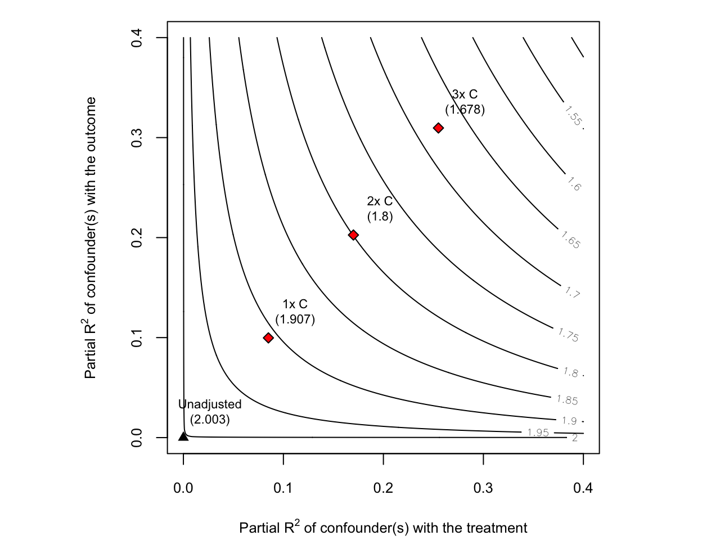
How to read it. The plot is a map of every hypothetical unmeasured confounder \(Z\):
The axes describe how strong \(Z\) would be. The horizontal axis is the share of the residual variation in the treatment \(A\) that \(Z\) would explain (its partial \(R^2\) with \(A\)); the vertical axis is the share of residual variation in the outcome \(Y\) that \(Z\) would explain (its partial \(R^2\) with \(Y\)). A confounder has to move both: stronger confounders sit further up and to the right.
The contour lines are the resulting estimate. Each gray line gives the adjusted estimate of \(A\)’s effect on \(Y\) you would get after also controlling for a confounder of that strength, and is labelled with that value. The black triangle at the origin is your actual estimate (here Unadjusted (2.003), meaning not yet adjusted for any hypothetical \(Z\)); as you move up and to the right the estimate erodes, from 2.0 near the origin down to about 1.5 in the top-right corner.
The red diamonds are the benchmarks. Labelled 1x C, 2x C, and 3x C, they show where a confounder respectively as strong as, twice as strong as, and three times as strong as the observed covariate \(C\) would land, annotated with the estimate it would produce. They turn the abstract axes into a concrete yardstick: instead of asking “what if a confounder explained 20% of the residual variance?”, you ask “what if there were an unmeasured confounder as strong as one I already measured?”
Oster’s coefficient-stability bound (7) takes a different approach: it tracks how much your coefficient and your \(R^2\) move when you go from a bare-bones model to one with your full set of observed controls. It then asks how much additional selection on unobservables, relative to the selection on observables you already saw, would be needed to drive the true effect to zero. The resulting statistic, often called \(\delta\), is implemented as psacalc in Stata and the regsensitivity package in R; a common (informal) benchmark is that \(\delta > 1\) means unobserved confounding would have to matter at least as much as everything you already controlled for.
Neither tool proves an unmeasured confounder doesn’t exist. They tell you how implausible that confounder would have to be for your conclusion to be wrong. Reporting one of these alongside a causal estimate is good practice whenever “no unmeasured confounding” is doing real work in your argument.
If your estimand is a total or direct effect, it helps to classify each candidate variable by its relationship to exposure and outcome. The total/direct strategies above depend on this classification. Common types include (8):
Confounder (C): A pre-exposure common cause of A and Y. Confounders produce a spurious association between A and Y if not adjusted. Failing to include a true confounder leads to omitted variable bias (see Omitted Variable Bias above for the exact formula). Heuristic: C occurs before A and influences both A and Y.
Mediator (M): A variable on the causal pathway from A to Y (A → M → Y). For a total effect estimand, M should not be adjusted as adjusting for it would remove part of A’s effect that you actually want to capture. It’s “over-adjustment” in that context. Only adjust for M if your goal is the direct effect through other pathways. Heuristic: M happens after A (is caused by A and in turn affects Y). Do not adjust for mediators when estimating total effects (2).
Collider (K): A variable that is a common effect of A and some other factor U (A → K ← U). Colliders are dangerous to adjust for: conditioning on a collider opens a spurious path between A and Y, inducing association where none existed (collider bias). Heuristic: If two arrows head into a variable (→ K ←), it is a collider. Do not condition on it or its descendants (3).
Instrument (ZIV): A variable that influences A but has no direct effect on Y except through A (and is independent of confounders). Instruments are used in specialized causal analyses (IV analysis), but in a standard outcome regression they should not be included as covariates. Adjusting for an IV can amplify bias in the presence of unmeasured confounders (“Z-bias”). Do not adjust for instruments in ordinary regression models for outcome (9).
Precision variable (P): A variable that affects Y only, and is neither caused by A nor a cause of A. Including such variables can reduce residual variance and improve estimation precision without biasing the effect of A. Heuristic: P is an independent predictor of Y that is unrelated to A. It’s generally safe (and sometimes helpful) to adjust for P to gain statistical power (10)
Effect modifier (E): A variable that changes the size or direction of the effect of A on Y. Effect modification is about heterogeneity of effects, not necessarily bias. If your scientific question is whether the effect differs across levels of E, include an interaction term such as \(A \times E\). If E is also a confounder, it must be handled as a confounder too.
These definitions assume a causal framework. In practice, deciding which variable is a confounder vs. collider requires subject knowledge. This is where DAGs come in handy (8,11). The examples below use a deliberately minimalist ggdag style: black arrows and nodes, white node text, a clear white background, and Yale blue only for the variable whose role is being taught.
The highlighted confounder C is a common cause of the exposure A and outcome Y. Adjusting for C blocks the back-door path \(A \leftarrow C \rightarrow Y\); omitting C leaves omitted-variable bias, whereas adjusting for C removes it—provided C is measured well enough.
dag_confounder <- dagify(
Y ~ A + C,
A ~ C,
exposure = "A",
outcome = "Y",
coords = list(
x = c(C = 1, A = 2, Y = 3),
y = c(C = 2, A = 1, Y = 1)
)
)
plot_cast_dag(dag_confounder, focal = "C")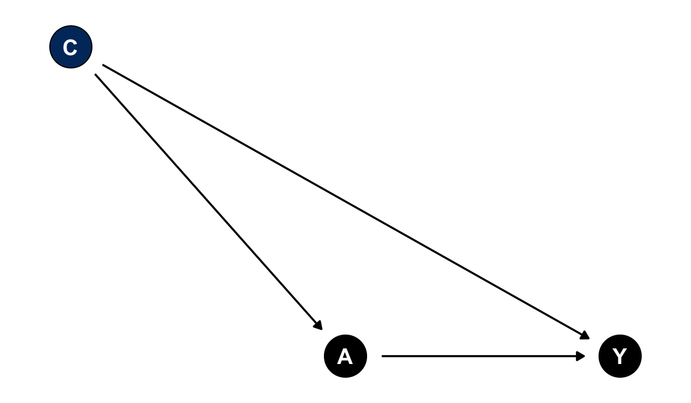
Example: socioeconomic status (SES) affects both whether someone exercises regularly (A) and their cardiovascular health (Y). SES is a confounder of the exercise-health relationship.
Adjustment decision: adjust for C when estimating the causal effect of A on Y.
What goes wrong if mishandled: omitting C leaves the A-Y association confounded. Part of the apparent effect of exercise may really be the effect of having more resources (omitted variable bias, see above).
The highlighted mediator M lies on a causal pathway from A to Y. Adjusting for M while estimating the total effect blocks part of the effect you are trying to estimate. It is appropriate only when the estimand is a direct effect that intentionally holds M fixed.
dag_mediator <- dagify(
Y ~ A + M,
M ~ A,
exposure = "A",
outcome = "Y",
coords = list(
x = c(A = 1, M = 2, Y = 3),
y = c(A = 1, M = 1, Y = 1)
)
)
plot_cast_dag(dag_mediator, focal = "M")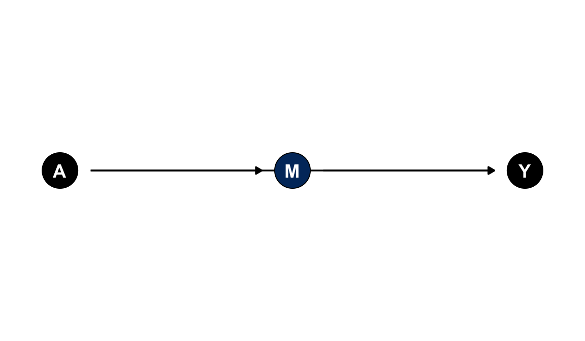
Example: physical activity (A) improves cardiovascular health (Y) partly by reducing chronic inflammation (M). Inflammation is one mediator on the path from activity to health.
Adjustment decision: do not adjust for M for a total effect; consider M only for a direct-effect question.
What goes wrong if mishandled: adjusting for inflammation while estimating the total effect of activity removes part of the very pathway you’re trying to measure, biasing the estimate toward zero (over-adjustment).
The highlighted collider K is caused by A and by another cause of Y. Conditioning on K opens the path \(A \rightarrow K \leftarrow U \rightarrow Y\), which can create bias rather than remove it.
dag_collider <- dagify(
Y ~ A + U,
K ~ A + U,
exposure = "A",
outcome = "Y",
coords = list(
x = c(A = 1, U = 1, K = 2, Y = 3),
y = c(A = 2, U = 0, K = 1, Y = 1)
)
)
plot_cast_dag(dag_collider, focal = "K")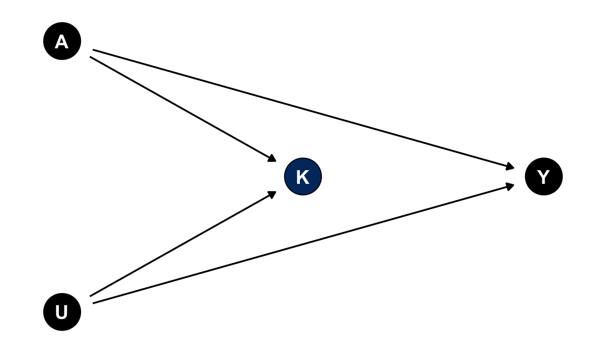
Example: among hospitalized patients, both having disease A and having an unrelated severe condition U increase the chance of admission (K). Restricting the analysis to hospitalized patients is equivalent to conditioning on K.
Adjustment decision: do not adjust for K or its descendants. If your study design already selected on K (e.g., a hospital-based case-control study where hospitalization is a collider), you face selection bias and need methods specifically designed for that structure, not standard regression adjustment.
What goes wrong if mishandled: conditioning on K induces a spurious association between A and U. This can happen even if A and U are completely unrelated in the general population (Berkson’s paradox).
The highlighted instrument Z affects A but has no direct path to Y except through A. Instruments are useful in instrumental-variable designs, but including a pure instrument as an ordinary covariate in an outcome regression is not the same thing as doing IV analysis.
dag_instrument <- dagify(
Y ~ A,
A ~ Z,
exposure = "A",
outcome = "Y",
coords = list(
x = c(Z = 1, A = 2, Y = 3),
y = c(Z = 1, A = 1, Y = 1)
)
)
plot_cast_dag(dag_instrument, focal = "Z")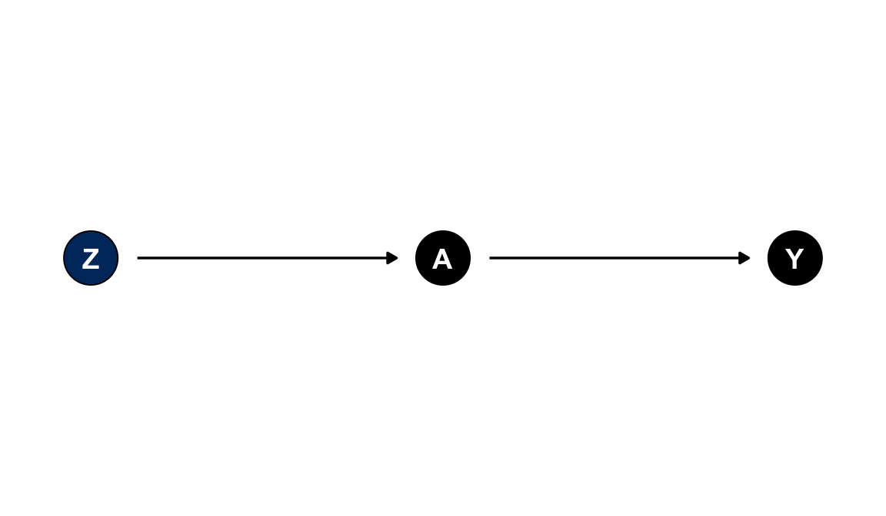
Example: a local cigarette tax rate (Z) shifts smoking behavior (A) but has no effect on birth weight (Y) except through changing whether mothers smoke.
Adjustment decision: do not add Z to a standard outcome regression merely because it predicts A.
If your analysis intentionally uses Z as an instrument, see the instrumental variables guide. In that design, Z is the source of identification rather than another covariate to adjust for.
What goes wrong if mishandled: if there is any unmeasured confounding between A and Y, adjusting for Z can amplify that bias rather than reduce it (“Z-bias”). That is the opposite of what including a strong predictor of A usually does.
The highlighted precision variable P predicts Y but is not a cause of A and is not caused by A. If that assumption is credible, adjusting for P can reduce residual variation and improve precision without changing the causal estimand.
dag_precision <- dagify(
Y ~ A + P,
exposure = "A",
outcome = "Y",
coords = list(
x = c(A = 1, P = 1, Y = 2),
y = c(A = 1.6, P = 0.4, Y = 1)
)
)
plot_cast_dag(dag_precision, focal = "P")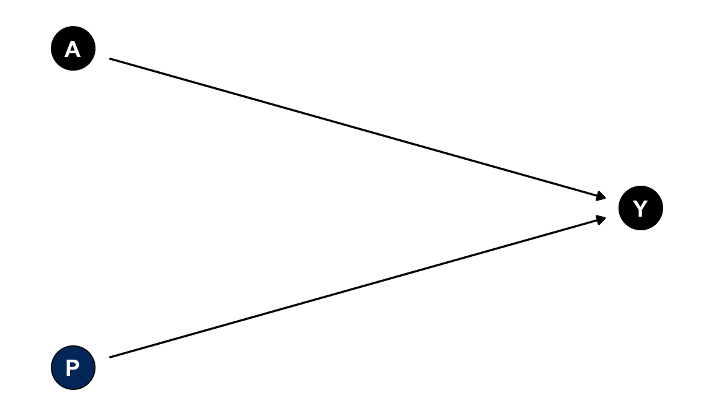
Example: in a randomized trial of a low-sodium diet (A) on blood pressure (Y), each participant’s baseline blood pressure (P) is measured before randomization. It predicts their follow-up blood pressure but cannot be caused by the diet assignment.
Adjustment decision: consider adjusting for P when precision matters and P is not related to A.
What goes wrong if mishandled: the main risk isn’t bias. It is a missed opportunity for a tighter confidence interval. If P turns out to also influence A (i.e., it is actually a confounder rather than a pure precision variable), treating it as “free” precision while ignoring its confounding role would leave that bias uncorrected.
A DAG encodes causal structure, not statistical parameters. Effect modification lives in the model’s interaction coefficient \(A \times E\), not in a special arrow. The question is: does the magnitude or direction of A’s effect on Y differ across levels of E?
In practice, an effect modifier is often also a cause of A. The same patient characteristics that drive treatment choice often drive how well the treatment works. When E causes both A and Y, E plays two roles at once: it is a confounder (adjust for the E main effect to close the back-door path \(A \leftarrow E \rightarrow Y\)) and an effect modifier (add the \(A \times E\) interaction to capture effect heterogeneity). These roles are not mutually exclusive. The DAG below is identical in shape to the Confounder tab. The difference is entirely in how E is used in the model.
dag_effect_modifier <- dagify(
Y ~ A + E,
A ~ E,
exposure = "A",
outcome = "Y",
coords = list(
x = c(E = 1, A = 2, Y = 3),
y = c(E = 2, A = 1, Y = 1)
)
)
plot_cast_dag(dag_effect_modifier, focal = "E")Example: baseline disease severity (E) influences which patients get prescribed the more aggressive treatment (A) and how much that treatment helps (Y). Sicker patients are both more likely to be treated and more likely to show a larger response.
Adjustment decision: adjust for E as a confounder (its main effect closes the back-door path) and include an \(A \times E\) interaction term to capture how A’s effect on Y varies with E.
What goes wrong if mishandled: omitting E’s main effect leaves the A-Y association confounded; omitting the \(A \times E\) interaction hides effect heterogeneity. Reporting only the average effect can mask a treatment that helps one subgroup and harms another.
Note: if E is known to be unrelated to A (e.g., under randomization), the DAG reduces to E → Y only. It is structurally identical to the Precision Variable tab. The interaction-term advice still applies, but there is nothing to adjust for confounding-wise.
A directed acyclic graph (DAG) is a diagram of your assumed causal relationships between your variables and direct causal effects. DAG is a powerful conceptual tool to decide covariates before analyzing data (3). DAGs force you to be explicit about assumptions (e.g. “Do I believe factor X affects both A and Y?”). They don’t come from the data; you must sketch them from theory or prior evidence. Think of DAGs as a map of the causal story and use them to guide covariate selection, but remember they’re a heuristic aid, not an absolute truth.
Nodes = variables
Arrows = direct causal effects pointing from cause to effect
Paths = any route through the graph linking A to Y (following arrow directions or against them).
We distinguish types of paths:
Causal paths: start at A and follow arrows forward to Y.
Back-door paths: any non-causal path that connects A to Y (typically going backward along an arrow into A). Back-door paths create confounding. By default, all paths are “open” (active) unless we block them by adjusting (conditioning) on a variable.
The figure below shows a simple DAG in which C is a common cause of A and Y: the causal path A → Y (black) and the back-door path A ← C → Y (Yale blue).
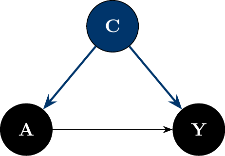
Adjustment rules in DAGs:
Conditioning on a non-collider blocks any path that goes through that variable.
Conditioning on a collider opens a path that was previously blocked.
See the Collider tab in Cast of variables, above, for a worked example (Berkson’s paradox) of exactly this: conditioning on a collider creates an association between two variables that were never causally connected.
Back-door criterion: To identify a set of covariates sufficient for confounding control (i.e. to estimate a total causal effect of A on Y) (3):
No covariate in the set is a descendant of A (avoids mediators).
The set blocks every back-door path from A to Y. In other words, after adjusting for those covariates, there’s no open path from A to Y except the causal path.
If you can find such a set, adjusting for those variables in your regression will remove confounding bias after assuming the DAG is correct. Multiple sets may satisfy this. Choose one that is parsimonious because unnecessary covariates can hurt precision (4).
In the figure above, C (Yale blue) is the minimal adjustment set: it is not a descendant of A, and conditioning on it blocks the only back-door path A ← C → Y. For graphs with many candidate covariates, ggdag_adjustment_set() automates the same d-separation search.
For a complete worked application of the back-door criterion, see An example: Maternal Smoking to Low Birth Weight, below. It names each variable’s role and arrives at a final adjustment set.
Two quantities that look similar can be very different:
Confounding is exactly the gap between these two quantities. Graphically, \(do(A=a)\) corresponds to deleting every arrow pointing into \(A\) and fixing \(A=a\). Once \(A\) is set by the intervention, it is no longer caused by anything in the diagram. The result is the mutilated graph \(G_{\overline{A}}\):
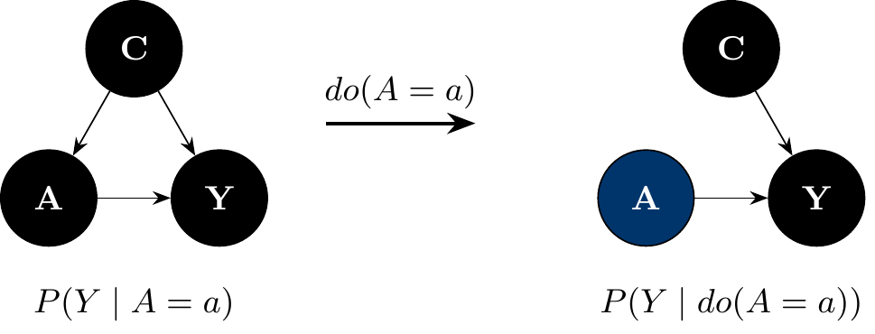
If \(A\) already has no incoming arrows in the original DAG, as in a randomized experiment, the mutilated graph is identical to the original. In that case, \(P(Y\mid do(A=a)) = P(Y\mid A=a)\) and no adjustment is needed. Everything in Define the estimand first and Omitted Variable Bias above is about what to do when that is not true. The three formal rules that make this precise are in the Appendix, for readers who want them.
Cinelli, Forney, and Pearl’s Crash Course in Good and Bad Controls (5) catalogs, DAG by DAG, when adding a covariate to your model helps, hurts, or does nothing. The naive heuristic is to “adjust for anything measured before treatment that’s correlated with both A and Y.” The two examples below show why that rule is neither necessary nor sufficient.
W below is not a common cause of A and Y. It has no arrow into Y, so it fails the textbook definition of a confounder. Yet an unmeasured factor U causes both W and Y, and W in turn causes A. This opens a back-door path A ← W ← U → Y. By the back-door criterion, conditioning on W blocks that path. W is a non-collider chain node, even though W itself never directly affects Y.
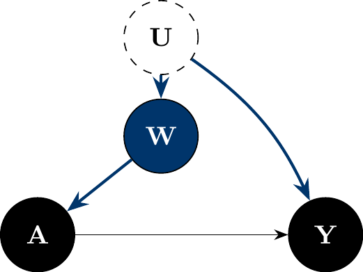
Adjustment decision: adjust for W. Even though W is not a common cause of A and Y, it sits on the only back-door path between them, and conditioning on it is sufficient to block that path.
M below is the mirror image. It is also Cinelli, Forney, and Pearl’s most counterintuitive case (5). A and Y share no common cause here: \(U_1\) affects A and M; \(U_2\) affects M and Y; M is a collider on the path \(A \leftarrow U_1 \to M \leftarrow U_2 \to Y\). By the Cast of Variables rules above, M is a collider and should not be conditioned on. Yet M is also pre-treatment and correlated with both A and Y. That is exactly the textbook heuristic for “this looks like a confounder, adjust for it.”
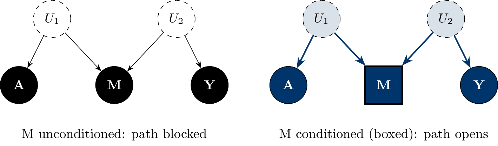
Conditioning on M induces collider bias, a pure d-separation fact (no \(do(\cdot)\) operator is involved): M is a collider on the path \(A \leftarrow U_1 \rightarrow M \leftarrow U_2 \rightarrow Y\), which is blocked by default, but conditioning on a collider un-blocks it, so A and Y are no longer d-separated given M. The left panel shows the path is blocked by default; the right panel shows that adjusting for M opens it, manufacturing an association between A and Y where the true direct and total effects are both zero. M-bias is the sharpest illustration of why “measured before treatment and correlated with both A and Y” is not, by itself, a sufficient reason to adjust for a variable. You need to know its role in the diagram, not just its timing and correlations.
Sometimes no back-door adjustment set exists at all: every common cause of A and Y is unmeasured, so no covariate set can block every back-door path. Pearl’s front-door criterion offers a way to identify the causal effect of A on Y, \(P(Y \mid do(A=a))\), even then (see Seeing vs. doing, above). It works only under a narrow and demanding set of conditions (12,13). It is a specialized identification strategy, not a routine substitute for confounder adjustment, and it is not the same thing as “adjusting for a mediator.”
The classic illustration: does smoking (A) cause lung cancer (Y)? Suppose an unmeasured factor U (e.g., genotype) affects both smoking and cancer risk directly, so the back-door path A ← U → Y can never be blocked with measured covariates. But suppose smoking affects cancer risk only by depositing tar in the lungs (M), and U does not affect tar deposits except through smoking.
dag_frontdoor <- dagify(
M ~ A,
Y ~ M + U,
A ~ U,
exposure = "A",
outcome = "Y",
coords = list(
x = c(U = 2, A = 1, M = 2, Y = 3),
y = c(U = 2, A = 1, M = 1, Y = 1)
)
)
plot_cast_dag(dag_frontdoor, focal = "M")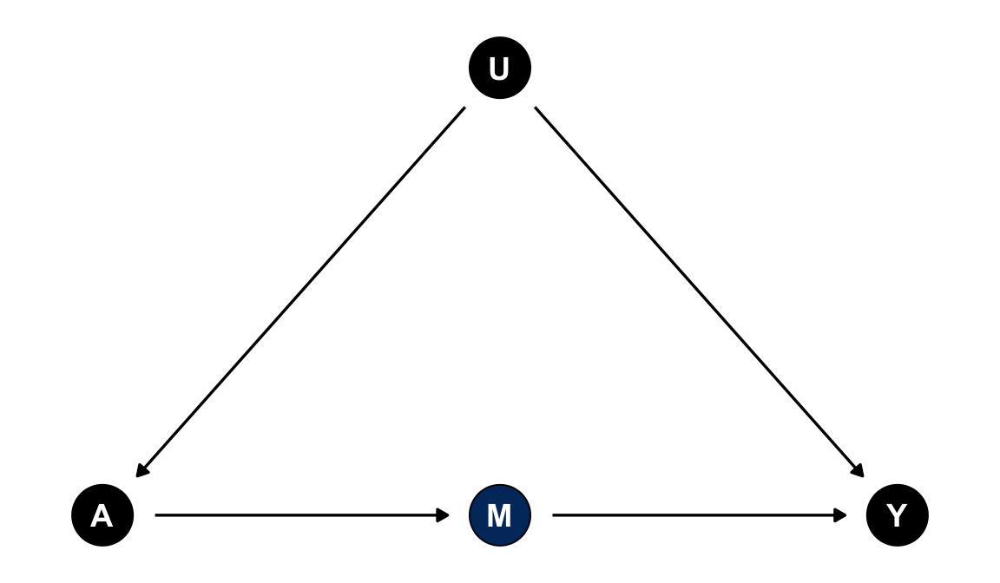
The front-door criterion requires all three of the following to hold for M:
M intercepts every causal path from A to Y. There is no direct A → Y arrow and no other mediator. M fully mediates the effect of A on Y.
No unblocked back-door path from A to M. Nothing confounds the A → M relationship (in the figure, U does not point to M).
Every back-door path from M to Y is blocked by A. Equivalently, A is the only confounder of M and Y.
When all three hold, the effect of A on Y is identified from \(P(M \mid A)\) and \(P(Y \mid A, M)\): the A → M effect is unconfounded and directly estimable, and the M → Y effect is confounded only by A, which you can adjust for. Combining these two pieces recovers the A → Y effect despite the unmeasured confounder U.
Caution: in real applications, condition 1 is the hardest to defend. Most plausible mediators are partial, not complete. If smoking has any effect on cancer that doesn’t run through tar deposits, the criterion fails. The front-door criterion applies to a specific structure (unmeasured confounding plus a fully mediating, otherwise-unconfounded variable), not to mediators in general. If you are estimating a total effect and have an ordinary mediator on the causal path, the right move is still not to adjust for it (see Cast of variables: Mediator, above). Invoking “front-door adjustment” is not a shortcut for that decision, and applying it when the three conditions don’t hold can introduce bias rather than remove it.
Many experts recommend a structured, DAG-based approach to covariate selection (8,14):
1- State your estimand and causal question. Example: “What is the total effect of maternal smoking (A) on infant low birth weight (Y)?” This tells you not to control for mediators on the smoking→birthweight pathway.
2- Time-order the variables. List everything relevant that occurs before A, then A, then things after A (including Y). Time ordering helps classify confounders vs. mediators. (E.g. maternal age is before smoking; gestational age is after smoking)
3- Sketch a DAG connecting A and Y with arrows based on plausible causal relationships. Include only variables you think are related to either A or Y. Don’t clutter it with every variable imaginable. Focus on the variables needed to represent confounding paths.
4- Use the DAG to identify covariates: Find confounders: pre-exposure causes of both A and Y. Mark them for adjustment. Identify mediators/descendants of A: do not adjust for these if estimating total effect. Identify any colliders or selection factors: do not adjust for these (adjusting would induce bias). Note instruments (causes of A only): do not adjust for them in the outcome model. Note any precision variables (outcome predictors unrelated to A): you may include these to improve precision if desired.
5- Document your decisions. In your methods section or protocol, describe which covariates you plan to adjust for and why (e.g., “based on a DAG, we adjusted for maternal age and SES as confounders; we did not adjust for birthweight mediators like maternal cardiovascular diseases”). A small DAG figure can be very effective in communicating this rationale (8).
By doing this exercise before running the regression, you avoid data-driven “fishing” and have a clear rationale for your model.
Question: What is the total effect of smoking during pregnancy (A) on low birth weight (Y)?
Likely confounders (C) are maternal age and socioeconomic status (SES). These affect whether a mother smokes and independently affect birth weight.
Likely mediators (M) are placental function, gestational age, fetal growth rate. These are on the pathway from smoking to low birth weight (smoking can shorten gestation or impair placenta, which in turn causes low weight).
Potential collider (K): frequency of intensive prenatal care. Suppose high-risk pregnancies and smokers are both more likely to get extra prenatal visits; prenatal care is affected by smoking and by an unmeasured risk factor. It’s a collider that you should not adjust for (conditioning on it would create a spurious association between smoking and risk factors).
Potential instrument (Z): local cigarette tax rate. This might influence smoking behavior but, aside from its effect on smoking, has no direct impact on birth weight. You wouldn’t include this in a standard regression for outcome (though it could be used in an instrumental variable analysis).
The tabs below build up one DAG that encodes all of these assumptions, working through the back-door criterion step by step: start from the full picture, identify the confounders that open back-door paths, set aside the variables that should be left alone, and arrive at the final adjustment set and regression equation.
This DAG encodes all five assumptions above. Smk (maternal smoking, exposure) affects LBW (low birth weight, outcome) directly and through the mediator Gest. Age and SES each cause both Smk and LBW. Care (prenatal care intensity) is caused by Smk and the unmeasured factor U. Tax (cigarette tax) affects LBW only through Smk.
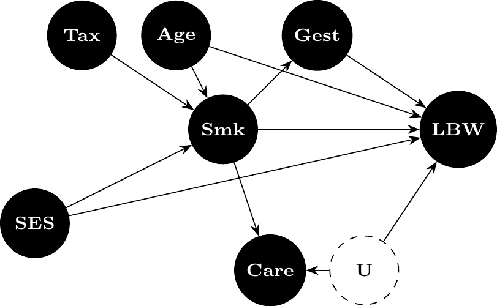
Age and SES each have an arrow into both Smk and LBW. These are back-door paths A ← C → Y, exactly the structure from Basics of DAG, above. Adjusting for Age and SES (Yale blue) blocks both back-door paths while leaving the causal path Smk → LBW open.
Three variables are correlated with both Smk and LBW but should not be adjusted for:
U is unmeasured and so cannot be adjusted for regardless of its role.
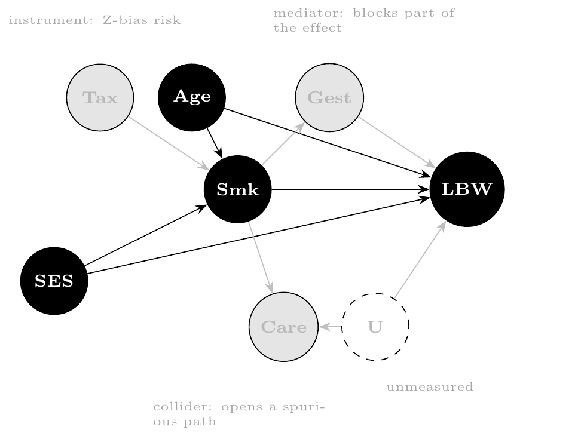
Putting it together: Smk, Age, and SES (Yale blue) form the final adjustment set. Gest, Care, Tax, and U (faded) are excluded. Adjusting for any of them would introduce bias rather than remove it.
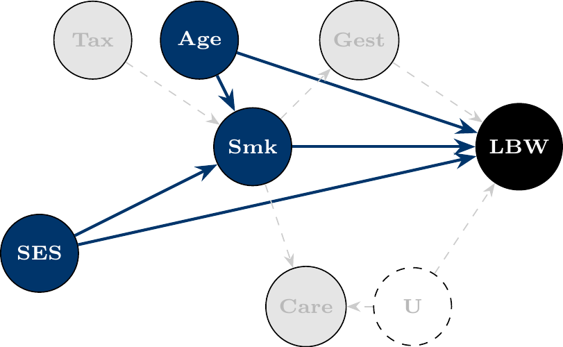
Decision: To estimate the total effect of smoking on low birth weight, adjust for the confounders Age and SES that open back-door paths. Do not adjust for Gest or other mediators (doing so blocks part of the very effect being estimated), nor for Care (a collider; adjusting would open the path Smk → Care ← U → LBW), nor for Tax (an instrument). The regression is:
\[\text{LBW} \sim \text{Smoke} + \text{Age} + \text{SES}\]
Automatically including all variables (“garbage-can” regression): Throwing in a haphazard plethora of covariates without justification is not good practice of science. It can introduce new biases and unstable estimates. Every variable should earn its place in the model by logical relevance, not just because it’s in the dataset (1).
This data-driven approach can backfire (14). A variable’s univariate p-value is not a reliable guide to confounding importance. You may exclude true confounders that happen not to reach the threshold, and include non-confounders or colliders that do. Example: Suppose SES is a true confounder of smoking→LBW, but in a small sample its p = 0.23 for association with LBW. Dropping it (due to p > 0.20) leaves the smoking effect biased by SES. Conversely, another variable might have a small p-value by chance but not actually confound the relationship. Don’t rely solely on p-values for covariate selection (14).
This is over-adjustment and you’re blocking part of the effect you want to measure. Example: Including gestational age in the model for smoking’s effect on birth weight will soak up part of the effect of smoking (since smoking can cause prematurity), thereby attenuating the observed effect of smoking. The coefficient on smoking would then represent the effect not mediated by gestational age (a direct effect), which is a different question than the total effect (2).
Conditioning on a collider can create a false association between exposure and outcome. Example: If we adjust for intensive prenatal care (a collider), we might induce an artificial correlation between smoking and the unmeasured risk factors that led to care, biasing the smoking effect. Always ask: does this variable have two arrows entering it in my DAG? If yes, be very cautious about adjusting for it (4,11).
As noted, if you control for a pure instrument (which affects A but not Y except through A), you can actually introduce bias if there’s any confounding left unmeasured. Example: Controlling for cigarette tax (instrument) in the birth weight regression could make bias worse if any other unmeasured factors affect smoking and birth weight. Instruments belong in two-stage IV analyses, not as ordinary covariates in a single-stage regression (9).
Be careful not to adjust for something that happened after the exposure, thinking it’s a confounder. If a variable is affected by A, it’s not a confounder; at best it’s a mediator or collider. Example: adjusting for the mother’s weight at delivery as if it were a baseline covariate. If smoking during pregnancy influenced weight gain, then maternal weight at delivery is partly a mediator. By adjusting for it, you remove part of smoking’s effect and misclassify the relationship. Always double-check the timeline: confounders occur before A; mediators occur after A (10).
The flip side of over-adjustment is under-adjustment. As Omitted Variable Bias above shows, leaving out a true confounder biases your estimate by exactly \(\beta_2 \delta_1\). That is the confounder’s effect on \(Y\) times its association with \(A\). For instance, omitting SES in our smoking example would leave the smoking coefficient biased, likely overstating its harmful effect due to SES-related differences. Ensure known major common causes are included, or run a sensitivity analysis (above) when they’re unmeasured (4).
The pitfalls above all reduce to six scenarios. Use this table to sanity-check a covariate list at a glance:
| Scenario | What’s included | Bias? | Precision? |
|---|---|---|---|
| Under-adjustment (omit a confounder) | A common cause of A and Y is left out | Biased by exactly \(\beta_2 \delta_1\) (Omitted Variable Bias, above) | No reliable gain |
| Over-adjustment (adjust for a mediator) | A variable on the causal path A → M → Y | Biased toward the direct effect (attenuates the total effect) | May tighten the CI for the now-different estimand |
| Collider adjustment | A common effect of A and another factor | Biased; induces a spurious A-Y association where none existed | No reliable gain |
| Instrument adjustment | A variable that affects only A | Can amplify existing unmeasured confounding (“Z-bias”) | Reduces effective variation in A |
| Irrelevant adjustment (adjust for noise) | A variable unrelated to both A and Y | Unbiased | Wastes degrees of freedom; slightly inflates variance |
| Precision adjustment (adjust for P) | A variable that predicts Y but not A | Unbiased | Reduces residual variance, narrows CIs |
Only the last row is unambiguously good; the first four are the failure modes covered above, and “irrelevant adjustment” is the everyday cost of garbage-can regression even when nothing is technically biased.
Not all extra variables are bad. If you have a variable that only predicts the outcome and is not part of any dangerous path, you can include it to improve precision. These precision variables increase the \(R^2\) (explained variance) of Y without biasing the effect of interest, thereby narrowing confidence intervals for your coefficients (15).
Example: In a trial of a low-sodium diet (A) on blood pressure (Y), suppose you also record the room temperature and cuff size during each blood pressure measurement. These factors (P) affect the BP readings (slightly) but are unrelated to the diet assignment and not caused by it. Including them in the model for Y can soak up some residual variation in blood pressure readings, potentially reducing the error variance and giving a more precise estimate of the diet’s effect. Since they don’t open any bias paths or block causal paths, there’s little downside to including them (4).
Precision variables are often adjusted for in randomized trials or well-controlled studies to account for known outcome variability (e.g., adjusting for age or center in a trial to improve power, even if randomization ensures no bias). However, you must be sure they truly are not related to A (10).
Two more practical checks before we dive into modeling:
This assumption means that for all combinations of confounders in your data, there are some units with A and some without A. In other words, no stratum of the confounders is entirely one exposure group. Lack of overlap can lead to reliance on extrapolation and model assumptions. Check overlap by inspecting distributions or propensity score histograms for the treated vs untreated. If you find, for example, no smokers in the highest SES group, you might have a positivity violation. Solutions include redefining or coarsening strata, dropping outlying strata, or reframing your causal question to a subpopulation where overlap holds. It’s better to address this before modeling (or use methods like weighting that handle it) (4).
Every covariate you adjust for in a regression consumes degrees of freedom. Especially for logistic or Cox models (where the outcome information is limited by number of events), you need enough data to support the model complexity. A rule of thumb is at least ~10 outcome events per parameter for logistic/Cox models (15). If you have many confounders relative to sample size, consider dimension reduction or penalized regression, or combine levels/categories as appropriate. Otherwise, your model may overfit or give unstable estimates. Missing data: Plan how to handle missing values on covariates a priori. Best practice is often to use methods like multiple imputation before running the regression, rather than dropping observations ad hoc (10). Make sure the imputation model respects the causal structure (e.g., don’t use a post-exposure variable to impute a confounder).
Sometimes covariate selection is not a one-time decision because A and confounders change over time. For example, suppose smoking status (A) and weight (W) are measured yearly, and each influences the other over time (smoking affects weight, and weight influences future smoking). Here, weight is a confounder for later smoking’s effect on outcome, but weight is also partially a mediator for earlier smoking. This scenario is time-varying confounding affected by prior exposure. Standard regression adjustment either adjusts for W (which blocks some effect of prior smoking) or not (leaving confounding for later smoking), either way bias can result.
The solution in such cases involves advanced methods (g-methods like marginal structural models with inverse probability weights, or g-estimation) (11). The DAG still helps to delineate relationships, but ordinary regression isn’t sufficient. If you identify such structures, be cautious because you may need specialized techniques beyond the scope of this guide (3).
So far, we’ve focused on causal validity to ensure our regression answers the right question without bias. Next, we turn to another aspect of model building: data-driven variable selection for model simplicity and prediction, and how to balance goodness-of-fit with the risk of overfitting.
All analyses may not have a clear DAG or strong theoretical guidance for every covariate. Sometimes we have a large pool of potential predictors and we want to select a simpler model that still fits well. Even in causal analyses, after accounting for known confounders, we might wonder if we can simplify the model by dropping covariates that add little information. In this section, we discuss statistical methods for variable selection, the concept of overfitting, and how to use goodness-of-fit criteria wisely.
A model with more variables will always fit the training data at least as well as, and usually better than, a model with fewer variables on in-sample metrics like R² or likelihood. In fact, R² never decreases when you add more covariates.
At the extreme, with \(p\) predictors and \(n\) observations, a model can achieve R² = 1 (perfect fit) if \(p\) is close to \(n\). This is likely just fitting the noise (15).
Overfitting occurs when a model picks up idiosyncratic patterns in the training data that don’t generalize to new data. An overfit model has low training error but high prediction error on new observations (15). For example, you might get an impressively high R² on your dataset by including many predictors, but find that on a validation set the R² is much lower (maybe even negative, meaning worse than a trivial mean model)
Overfitting is more likely when: \(p\) (number of predictors) is large relative to \(n\) (sample size). You try many different models and select the one that best fits your sample (capitalizing on chance correlations). The signal-to-noise ratio is low with many predictors, some will appear to correlate with Y just by chance.
Key point: We don’t just want a model that fits this dataset well. We want one that will make accurate predictions or inferences in new data. That means we need to control model complexity.
The previous section showed that more variables always improve in-sample fit but can hurt out-of-sample performance. Three further consequences of letting the data choose your model are easy to underestimate, and all three compound as the number of candidate predictors \(p\) grows relative to the sample size \(n\).
Unstable estimates. A selection procedure is itself a function of the sample. This includes stepwise selection, best-subset search, and “I tried a few specifications and kept the one that looked best.” Resample the data and the procedure can return a different set of “winning” variables, with different signs and magnitudes on the coefficients that survive. A point estimate from a searched model is therefore much less trustworthy than the same estimate from a pre-specified model, even when the searched model has the better \(R^2\) (15).
Misleading post-selection inference. The p-values, standard errors, and confidence intervals reported by your software assume the model was specified before looking at the outcome. If you instead chose this model because it fit well, those reported quantities no longer mean what they claim to. Maybe these variables had small p-values, or maybe this combination maximized \(R^2\). Either way, the search itself is an additional source of uncertainty the formula doesn’t account for, so post-selection p-values are systematically too small and confidence intervals too narrow. This is sometimes called “double-dipping”: using the data once to choose the model and again to test it.
Type I error inflation. This is the same problem viewed as multiple comparisons. If you have \(p\) candidate covariates that truly have no effect and you test each at \(\alpha = 0.05\), the probability that at least one looks “significant” by chance alone is \(1 - (1-\alpha)^p\):
| \(p\) candidates | \(P(\text{at least one false positive})\) |
|---|---|
| 1 | 5% |
| 5 | 23% |
| 10 | 40% |
| 20 | 64% |
The simulation below confirms this empirically: with \(n = 100\) and 20 unrelated noise covariates, roughly two-thirds of “studies” turn up at least one spuriously significant predictor.
set.seed(2024)
n <- 100
p <- 20
n_sims <- 2000
false_positive <- replicate(n_sims, {
Y <- rnorm(n)
X <- matrix(rnorm(n * p), nrow = n, ncol = p)
pvals <- apply(X, 2, function(x) summary(lm(Y ~ x))$coefficients[2, 4])
any(pvals < 0.05)
})
mean(false_positive)[1] 0.6245This risk compounds with (a) trying multiple model specifications and reporting only the one that “worked,” (b) small samples, where chance correlations are larger relative to any true signal, and (c) reporting the resulting p-values without disclosing the search.
Type S and Type M errors. Even a single, pre-registered test can mislead if the study is underpowered. Conditioning on “statistically significant” filters for estimates that happen to be large in your particular sample, so among significant results the magnitude is systematically exaggerated (a Type M, or magnitude, error), and in low-powered studies the sign can come out wrong entirely (a Type S, or sign, error) (16). The retrodesign package (install from GitHub, e.g. remotes::install_github("andytimm/retrodesign")) implements these calculations directly: given a hypothesized true effect size and your study’s standard error, it returns the probability of a sign error and the expected exaggeration ratio among results that clear \(p < 0.05\). This is a useful gut-check whenever a “significant” finding from a small or noisy study is doing a lot of work in your conclusions.
What to do about it. The best fix is the one this guide has argued for from the start: use the DAG to pre-specify your adjustment set before looking at the outcome data, so there is no search to correct for. If a data-driven search is unavoidable, separate the data used to select the model from the data used to evaluate it (sample splitting or cross-validation), report the full search rather than only the winning model, and treat the resulting p-values as descriptive rather than confirmatory (15).
How do we decide if adding (or removing) a variable is “worth it”? Statisticians have developed criteria to balance model fit against complexity:
If Model B includes a few extra predictors compared to Model A, one can do a partial F-test (or likelihood ratio test) to see if those predictors significantly improve the fit. This is a classical approach for nested linear models: if the increase in R² (or decrease in residual sum of squares) is larger than expected by chance, you reject the null that the added coefficients are all zero—that is, the larger model fits significantly better. For example, if you add 3 variables, you can test H₀: their coefficients = 0 via an F-test. A significant p-value means the bigger model provides a significantly better fit. This assumes you had a hypothesis to test. Using F-tests in a post-hoc searching manner (i.e. trying many combos) can lead to bias in p-values (15).
AIC is a widely used metric for model selection that explicitly penalizes complexity. It is defined as \(\text{AIC} = -2\log L + 2k\), where \(L\) is the likelihood and \(k\) is the number of parameters. Lower AIC is better. Intuitively, AIC rewards goodness-of-fit through the likelihood term but applies a penalty of +2 for each parameter to discourage overfitting. Minimizing AIC is roughly equivalent to minimizing the estimated out-of-sample prediction error. In fact, theory shows AIC approximates the model’s expected out-of-sample deviance (how well it predicts new data). When comparing models, one with AIC lower by more than 2 to 4 units is often considered meaningfully better. AIC can compare any models fit to the same data as they don’t have to be nested (17).
BIC is similar to AIC but with a stricter penalty: \(\text{BIC} = -2\log L + k\log n\). For moderate or large \(n\), \(\log n\) > 2, so BIC penalizes free parameters more heavily than AIC (15). BIC tends to select more parsimonious models (fewer variables) especially as sample size grows. BIC can be seen as approximating a Bayesian approach with a certain prior on models. If your goal is finding the “true” model, BIC may be preferable; if your goal is predictive accuracy, AIC often performs better.
This is a simpler metric often reported for linear models. Adjusted R² is \(1 - ((1 - R^2)(n - 1)/(n - p - 1))\), where \(p\) is the number of predictors (excluding the intercept). It adds a penalty for each additional predictor. Unlike regular R², adjusted R² can decrease if you add a variable that doesn’t sufficiently improve fit. It’s a rough heuristic and useful for quick comparison, but generally AIC/BIC or cross-validation are more nuanced.
Arguably the gold standard for model evaluation is to actually test performance on held-out data. In \(K\)-fold cross-validation, you split the data into \(K\) parts, leave one part out, fit the model on the rest, and compute the prediction error on the left-out part. Do this \(K\) times and average the error. This directly estimates out-of-sample error for a model. You can compare models by their cross-validated error (lower is better). Unlike AIC/BIC which approximate this, cross-validation actually does it, at the cost of more computation. For example, you could use 10-fold CV to compare a full model vs. a reduced model. The model with lower CV error is likely to generalize better. Cross-validation is especially useful when you have lots of predictors and want to prune them, or to tune hyperparameters (like the penalty in LASSO) (15).
In practice: If you have a small set of candidate models, you might report both AIC and BIC and perhaps an \(R^2_{adj}\), and discuss if they point to the same “best” model. If you are doing a broad search for the best combination of predictors, it’s better to use an automatic selection method (see below) with AIC/BIC or cross-validation, because manually trying many combinations and picking the best risks overfitting (15).
It should be kept in mind that a model chosen by these criteria is not guaranteed to be correct, especially if many variables were considered. It just balances fit vs complexity under certain assumptions (15).
Everything above assumes a manageable list of candidate covariates. Some settings hand you hundreds or thousands of candidate predictors, sometimes more than you have observations (\(p > n\)). Examples include genomics, text, and administrative records linked across many sources. Stepwise selection and AIC/BIC comparison become unstable or infeasible in this regime, so a different toolkit takes over.
Principal components analysis (PCA) replaces a large set of correlated predictors with a smaller set of uncorrelated linear combinations (“components”) that capture most of the variance in the predictors. PCA is unsupervised. It never looks at \(Y\), so it can collapse redundant measurements (e.g., dozens of correlated survey items) before they enter a model. The cost is interpretability: a component is a weighted average of many original variables, so “the effect of component 2” rarely maps onto a single causal story.
LASSO (\(L_1\)-penalized regression) minimizes \(\text{RSS} + \lambda \sum_j |\beta_j|\). The penalty shrinks coefficients toward zero and, unlike ridge regression, sets many of them to exactly zero. This performs variable selection and estimation in one step (18). The tuning parameter \(\lambda\) controls how aggressive the selection is and is typically chosen by cross-validation (see above).
Elastic net combines the LASSO’s \(L_1\) penalty with ridge regression’s \(L_2\) penalty: \(\lambda \left[ \alpha \sum_j |\beta_j| + (1-\alpha) \sum_j \beta_j^2 \right]\). This handles groups of correlated predictors better than LASSO alone, which tends to arbitrarily pick one variable from a correlated group and zero out the rest (19).
Why prediction-oriented selection does not automatically support causal claims. PCA, LASSO, and elastic net are built to optimize prediction of \(Y\) or compress variance in \(X\). They have no notion of confounder, mediator, collider, or instrument, and no access to your DAG. Concretely:
The practical implication is straightforward. Penalized regression and PCA are excellent tools when your goal is genuinely predictive. Use them when you want to forecast \(Y\) as accurately as possible and you don’t care which variables “did the work.” They are not a substitute for DAG-based confounder selection when your goal is causal. If you must combine the two, such as using LASSO to screen a huge covariate pool before a causal analysis, treat any variables you know to be confounders from your DAG as forced inclusions (not subject to the penalty). Be transparent that the remaining selection is prediction-driven, not causally justified (20).
By combining thoughtful theory-driven selection with judicious use of data-driven techniques, you can build regression models that are both scientifically credible and generalize well. The goal is a model that answers your question with minimal bias and variance. Include just enough covariates to get the job done, and no more.
Before finalizing a model, work through this list for each candidate covariate:
Estimand. What effect am I trying to estimate: total, direct, or pure prediction? (See Define the estimand first, above.) The answer determines whether mediators are fair game.
Timing. Does this variable occur before, at, or after the exposure? Pre-exposure variables can be confounders or precision variables; post-exposure variables can be mediators or colliders, and generally should not be adjusted for when estimating a total effect.
DAG role. Using your DAG (or your best sketch of one), classify the variable: confounder, mediator, collider, instrument, precision variable, effect modifier, or none of the above (see Cast of variables, above).
Adjustment decision. Given its role, should you adjust for it? Confounders and precision variables: generally yes. Mediators (for a total-effect estimand), colliders, and instruments: generally no. Effect modifiers: include an interaction term if heterogeneity is the scientific question.
Sensitivity concern. If the variable is a potential confounder you can’t measure well (or at all), how strong would it need to be to change your conclusion? (See Sensitivity analysis, above.)
Sample-size burden. Does adding this variable threaten the events-per-parameter rule of thumb, or push you toward the high-dimensional setting above where penalized methods are needed? (See Sample size vs. Number of covariates, above.)
A covariate that can’t get a clear answer to all six questions probably needs more thought before it goes into the model. The same is true before you decide to leave it out.
The DAGs in this guide are built with the ggdag package, which wraps dagitty (21) in ggplot2. The same engine powers the dagitty.net web app. The basic recipe is: declare the edges with dagify(), optionally tag exposure/outcome and supply fixed coords for a left-to-right layout, and plot with ggdag() or a custom ggplot2 call:
library(ggdag)
library(ggplot2)
dag <- dagify(
Y ~ A + C,
A ~ C,
exposure = "A",
outcome = "Y",
coords = list(
x = c(C = 1, A = 2, Y = 3),
y = c(C = 2, A = 1, Y = 1)
)
)
ggdag(dag) + theme_dag_blank()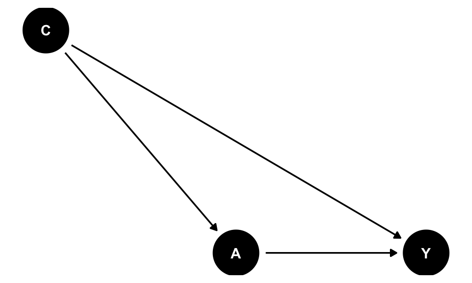
theme_dag_blank() strips the axes and grid that ggplot2 would otherwise add. This guide’s figures additionally use a small custom helper, plot_cast_dag() (defined once near the start of Cast of Variables), which applies the black/white/Yale-blue styling and a focal argument to highlight one node at a time. Copy that helper into your own script if you want the same look.
Beyond plotting, dagitty/ggdag can answer the structural questions this guide keeps coming back to: ggdag_adjustment_set() finds back-door-criterion adjustment sets automatically, ggdag_paths() enumerates open paths between two nodes, and ggdag_dseparated() checks d-separation given a conditioning set. For a point-and-click alternative, the dagitty.net web app builds the same dagitty objects and can export the R code directly. This is useful for sketching a DAG before you’ve decided on variable names, or for collaborators who don’t use R.
Python’s causal-inference ecosystem doesn’t have a single tool as tightly integrated as ggdag/dagitty, but the same diagram can be drawn with networkx for the graph structure and matplotlib for layout, following the same black/white/Yale-blue convention used throughout this guide:
import networkx as nx
import matplotlib.pyplot as plt
G = nx.DiGraph()
G.add_edges_from([("C", "A"), ("C", "Y"), ("A", "Y")])
pos = {"C": (1, 1), "A": (0, 0), "Y": (2, 0)}
node_colors = ["#00356B" if n == "C" else "black" for n in G.nodes]
nx.draw(
G, pos,
with_labels=True,
node_color=node_colors,
node_size=1800,
font_color="white",
font_weight="bold",
arrowsize=20,
edge_color="black"
)
plt.axis("off")
plt.show()For the structural questions, dagitty’s algorithms are available in Python through the causalgraphicalmodels package, or via dowhy’s CausalModel, which accepts a graph in dagitty/networkx/GML format and can identify adjustment sets using the same back-door logic described above. These tools can find adjustment sets, check d-separation, and enumerate back-door paths. Neither tool has quite the maturity of dagitty itself, so for complex graphs it is often easiest to build the DAG in R (or the dagitty.net web app) and translate the resulting adjustment set into Python.
Greenland, Sander, Judea Pearl, and James M. Robins. 1999. “Causal Diagrams for Epidemiologic Research.” Epidemiology 10 (1): 37–48.
Shrier, Ian, and Robert W. Platt. 2008. “Reducing Bias through Directed Acyclic Graphs.” BMC Medical Research Methodology 8: 70.
Hernán, Miguel A., and James M. Robins. 2020. Causal Inference: What If. Boca Raton, FL: Chapman & Hall/CRC.
Cinelli, Carlos, Andrew Forney, and Judea Pearl. 2024. “A Crash Course in Good and Bad Controls.” Sociological Methods & Research 53 (3): 1071–1104. https://doi.org/10.1177/00491241221099552.
Pearl, Judea. 1995. “Causal Diagrams for Empirical Research.” Biometrika 82 (4): 669–688.
Pearl, Judea. 2009. Causality: Models, Reasoning, and Inference. 2nd ed. Cambridge: Cambridge University Press.
Textor, Johannes, Benito van der Zander, Mark S. Gilthorpe, Maciej Liśkiewicz, and George T. H. Ellison. 2016. “Robust Causal Inference Using Directed Acyclic Graphs: The R Package ‘dagitty’.” International Journal of Epidemiology 45 (6): 1887–1894.
Every adjustment rule in this guide is a special case of a more general formal system for connecting interventional questions to observational data: Pearl’s do-calculus (12,13). These rules tell us when to adjust for confounders, leave colliders and mediators alone when estimating a total effect, and use the back-door criterion to find a sufficient adjustment set. Seeing vs. doing, above, introduces the do-operator itself: \(P(Y\mid A=a)\) vs. \(P(Y\mid do(A=a))\). It also introduces the graph-surgery picture of \(do(A=a)\). This appendix gives the three formal rules that make that picture precise, mainly so the rules used earlier in this guide read as consequences of one coherent framework rather than a list of unrelated folk theorems.
Pearl’s do-calculus (13) gives three rules for rewriting expressions that mix \(do(\cdot)\) with ordinary conditioning, each licensed by a d-separation condition in some (possibly mutilated) version of the graph:
You will essentially never apply these formulas by hand. What they buy you is this: if your adjustment set \(\mathbf{C}\) satisfies the back-door criterion (Rule 2), then
\[P(Y \mid do(A=a)) = \sum_{\mathbf{c}} P(Y \mid A=a, \mathbf{C}=\mathbf{c})\, P(\mathbf{C}=\mathbf{c}),\]
i.e. “regress \(Y\) on \(A\) and \(\mathbf{C}\), then average over the distribution of \(\mathbf{C}\).” That is exactly the adjusted-regression approach this guide recommends. Do-calculus matters most when the back-door criterion fails, for example when every back-door path runs through an unmeasured variable. It can sometimes prove that another identification strategy, like the front-door criterion, still recovers \(P(Y\mid do(A=a))\) from observational data. It can also prove that no such strategy exists, and the effect is simply not identifiable from this data and graph.
The code below is the exact function used to generate ovb_data.csv, and used throughout the Omitted Variable Bias section. Copy it into an R script, then call
df <- simulate_ovb_data()to reproduce the dataset.
#' Simulate data illustrating omitted variable bias
#'
#' Generates data in which C is a common cause of A and Y, satisfying both
#' conditions for omitted variable bias (C predicts Y conditional on A, and
#' C is associated with A). Used to demonstrate that the bias from omitting
#' C from a regression of Y on A equals exactly beta2 * delta1, and reused
#' for a Cinelli-Hazlett sensitivity analysis on the same fitted model.
#'
#' @param seed Integer. Random seed for reproducibility. Defaults to 123.
#' @param n Integer. Sample size. Defaults to 5000.
#'
#' @return A data frame with columns \code{A} (exposure), \code{C}
#' (omitted confounder), and \code{Y} (outcome). The true effect of A on
#' Y, adjusted for C, is 2; C's effect on both A (delta1) and Y (beta2)
#' is 0.3.
#'
#' @examples
#' df <- simulate_ovb_data()
#'
#' @export
simulate_ovb_data <- function(seed = 123, n = 5000) {
set.seed(seed)
C <- rnorm(n)
A <- 0.3 * C + rnorm(n)
Y <- 2 * A + 0.3 * C + rnorm(n)
data.frame(A, C, Y)
}@online{demiray2026,
author = {Demiray, Atalay},
publisher = {Yale Library StatLab},
title = {Selecting the {Right} {Variables}},
date = {2026-08-17},
langid = {en},
abstract = {This guide introduces a principled approach to covariate
selection in regression models, with a focus on causal
interpretation. We emphasize that the question “What is the
association of X with Y, holding Z constant?” is only meaningful
once the target estimand is clearly defined (total effect, direct
effect, or purely predictive association). Using the language of
causal diagrams, we distinguish key variable types, including
confounders, mediators, colliders, instruments, and precision
variables. We explain how including or excluding each can reduce
bias, create bias, or affect efficiency. Directed acyclic graphs
(DAGs) are presented as a heuristic tool to encode subject-matter
knowledge, identify appropriate adjustment sets via the back-door
criterion, and avoid common errors such as garbage-can regression,
p-value-driven variable selection, and adjustment for post-exposure
variables or colliders. We also discuss practical issues such as
positivity, sample size versus model complexity, and time-varying
confounding where standard regression may fail. Finally, we outline
data-driven model selection tools (F-tests, AIC, BIC, adjusted
R\textsuperscript{2}, and cross-validation) and show how they can be
combined with theory-driven covariate selection to balance
goodness-of-fit against overfitting. The goal is to help applied
researchers build regression models that are both scientifically
credible and robust to overfitting.}
}